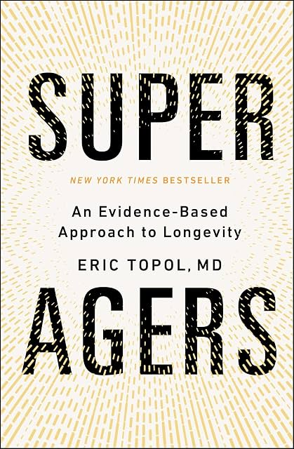

(Audio) Super Agers, by Topol
Wednesday July 1, 2026
Dr. Topol offers his adult-in-the-room response to such books as Attia's Outlive and Sinclair's Lifespan. He specifically recommends against taking rapamycin, for example, and doesn't (as far as I could tell) use misleading graphs the way Attia did. He does throw around words like "sequelae" and "senolytics" and narrate the audio book himself.
He pronounces GLP-1 as "glip one" and really likes it, and really likes AI, and mentions very many times that the gut microbiome is connected with everything, and thinks we should use waist circumference more in medical contexts.
One interesting connection that caught my attention was that he related pleiotropic genes (genes that cause multiple things, and we don't always know why or how) and AI explainability (a model does something, and we don't always know why or how). I think the broader point was that in medicine, we don't always know the mechanism by which something (some drug, etc.) works, and we're satisfied if it does work. Maybe AI is not so different.
In the end the book mostly has the same core recommendations for healthspan that everyone knows: eat healthy, exercise, etc. It has a lot more detail, on a wide range of things, and is really long, compared to some of the other pop live-forever books. It's reserved in its predictions of longevity breakthroughs. It's "an evidence-based approach to longevity."

- Five dimensions
- Lifestyle+
- Cells
- Omics [Aaron: As in genomics, proteomics, etc.]
- AI
- Drugs & Vaccines
(A bunch of the book is organized around these.)
- Hallmarks of aging
- Primary
- Genomic instability
- Telomere attrition
- Epigenetic alterations
- Loss of proteostasis
- Disabled macroautophagy
- Antagonistic
- Cellular senescence
- Mitochondrial dysfunction
- Deregulated nutrient-sensing
- Integrative
- Dysbiosis [Aaron: gut microbiome etc.]
- Chronic inflammation
- Altered intercellular communication
- Stem cell exhaustion
- Primary
(This is the content of figure 12.1, which is itself based on the 2023 Hallmarks of aging: An expanding universe.)